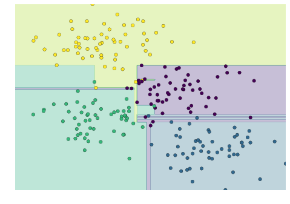
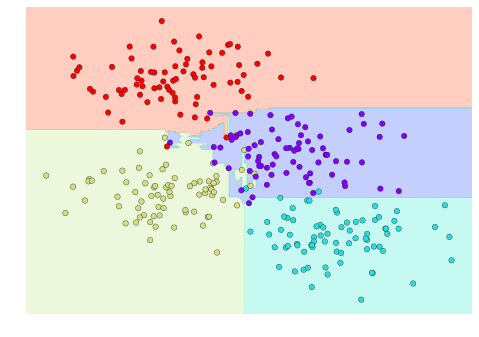
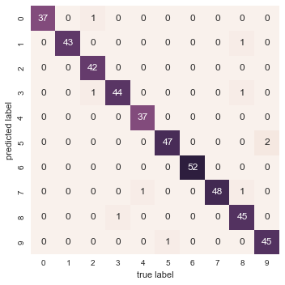

41 深入理解：决策树与随机森林
This notebook contains an excerpt from the Python Data Science Handbook by Jake VanderPlas; the content is available on GitHub.
The text is released under the CC-BY-NC-ND license, and code is released under the MIT license. If you find this content useful, please consider supporting the work by buying the book!
< In-Depth: Support Vector Machines | Contents | In Depth: Principal Component Analysis >
在前面，我们已经详细学习了一个简单的生成式分类器（朴素贝叶斯，参见 深入理解：朴素贝叶斯分类），以及一个强大的判别式分类器（支持向量机，参见 深入理解：支持向量机）。本节将介绍另一种非常实用的算法——一种非参数方法，称为 随机森林（random forests）。
随机森林属于 集成方法（ensemble method），也就是说它通过结合多个简单模型的结果来提升整体性能。令人惊讶的是，这种集成策略通常比单一模型效果更好：多数投票的结果往往优于任何一个单独模型！在后续内容中，我们将通过具体示例来说明这一点。
首先，进行常规的库导入操作：
41.1 随机森林的动机：决策树
在介绍随机森林之前，我们先来了解一下决策树。决策树是一种非常直观的分类方法，通过一系列“是/否”问题逐步缩小选择范围，最终实现对数据的分类。每一步的分裂都能有效减少待分类的对象数量，使得分类过程高效且易于理解。
然而，单一的决策树容易出现过拟合现象，即模型过于关注训练数据的细节，导致泛化能力下降。为了解决这个问题，随机森林应运而生。它通过集成多个决策树，综合各树的判断结果，从而提升整体模型的准确性和鲁棒性。
接下来，我们将通过具体示例，深入理解决策树的工作原理，并逐步引入随机森林这一强大的集成方法。
随机森林是建立在决策树基础上的一种集成学习方法。因此，我们首先从决策树本身开始讨论。
决策树是一种非常直观的分类或标记对象的方法：你只需通过一系列问题，逐步缩小分类范围。 例如，如果你想构建一个决策树来判断你在徒步时遇到的动物，你可以设计如下的决策流程：

这种二分法让决策树变得非常高效：在设计良好的树结构中，每个问题都能将选项数量减少一半左右，即使面对大量类别，也能迅速缩小范围。当然，关键在于每一步该如何提出合适的问题。
在机器学习中的决策树实现里，这些“问题”通常表现为对数据的轴对齐分割：也就是说，树中的每个节点会根据某个特征的阈值，将数据分成两组。下面我们来看一个具体的例子。
41.1.1 构建决策树
来看一个二维数据示例，每个数据点都属于四个类别中的某一个：
from sklearn.datasets import make_blobs
X, y = make_blobs(n_samples=300, centers=4,
random_state=0, cluster_std=1.0)
plt.scatter(X[:, 0], X[:, 1], c=y, s=50, cmap='rainbow');一个简单的决策树会根据某种定量标准，沿着某个特征轴对数据进行迭代分割。每一层分割后，新的区域会根据其中样本的多数类别来分配标签。下图展示了针对这组数据，决策树分类器前四层的划分过程与可视化效果：

请注意，在第一次分裂后，上方的分支中的所有点都保持不变，因此无需对该分支继续细分。除了那些已经只包含单一类别（颜色）的节点外，每一层的每个区域都会再次沿着两个特征中的某一个进行分割。
我们可以使用 Scikit-Learn 中的 DecisionTreeClassifier 估计量，将决策树拟合到我们的数据上，具体过程非常简单：
我们可以编写一个简单的工具函数，帮助我们直观地展示分类器的输出效果：
def visualize_classifier(model, X, y, ax=None, cmap='rainbow'):
ax = ax or plt.gca()
# Plot the training points
ax.scatter(X[:, 0], X[:, 1], c=y, s=30, cmap=cmap,
clim=(y.min(), y.max()), zorder=3)
ax.axis('tight')
ax.axis('off')
xlim = ax.get_xlim()
ylim = ax.get_ylim()
# fit the estimator
model.fit(X, y)
xx, yy = np.meshgrid(np.linspace(*xlim, num=200),
np.linspace(*ylim, num=200))
Z = model.predict(np.c_[xx.ravel(), yy.ravel()]).reshape(xx.shape)
# Create a color plot with the results
n_classes = len(np.unique(y))
contours = ax.contourf(xx, yy, Z, alpha=0.3,
levels=np.arange(n_classes + 1) - 0.5,
cmap=cmap, clim=(y.min(), y.max()),
zorder=1)
ax.set(xlim=xlim, ylim=ylim)现在我们可以直观地观察决策树分类的效果：

如果你在本地运行本笔记本，可以使用 在线附录 中提供的 helpers 工具脚本，交互式地体验决策树构建的全过程。
# helpers_05_08 is found in the online appendix
import helpers_05_08
helpers_05_08.plot_tree_interactive(X, y);
可以看出，随着决策树深度的增加，分类区域会变得非常奇怪。例如，当树的深度达到五层时，黄色和蓝色区域之间竟然出现了一块又高又窄的紫色区域。这种现象显然不是数据本身分布的真实反映，而是由于样本分布或噪声等偶然因素造成的。也就是说，即使只构建了五层的决策树，模型已经明显出现了过拟合现象。
41.1.2 决策树与过拟合现象
过拟合是决策树模型的一个普遍问题：树结构一旦过深，就很容易“记住”训练数据中的细节，而忽略了数据整体的分布规律。我们可以通过不同的数据子集来观察这一现象——比如，下图分别在原始数据的两个不同子集上训练了两棵决策树：

可以看到，在某些区域（比如四个角落），两棵决策树的分类结果是一致的；而在其他区域（比如各个簇之间的过渡地带），两棵树的分类却截然不同。这里的关键现象是：分类结果不一致的地方，往往也是模型最不确定的地方。因此，如果我们能够结合两棵树的信息，或许就能得到更优的分类结果！
如果你正在本地运行本笔记本，下面的函数可以让你交互式地展示在数据随机子集上训练的决策树拟合效果，非常适合直观体验模型的变化过程。
# helpers_05_08 is found in the online appendix
import helpers_05_08
helpers_05_08.randomized_tree_interactive(X, y)
正如结合两棵决策树的信息能够提升分类效果一样，如果我们将更多决策树的判断结果综合起来，模型的表现往往会进一步提升。
41.2 集成学习方法：随机森林
多个过拟合的模型可以组合起来，减弱过拟合的影响——这正是集成方法（ensemble method）背后的核心思想。Bagging（自助法/装袋法）就是一种典型的集成策略：它通过并行训练多个容易过拟合的模型，然后对它们的结果进行平均，从而获得更优的分类效果。
当我们将多个随机化的决策树集成起来时，这种方法就被称为随机森林（random forest）。
在 Scikit-Learn 中，可以使用 BaggingClassifier 这个元估计器手动实现 bagging 分类，示例如下：
from sklearn.tree import DecisionTreeClassifier
from sklearn.ensemble import BaggingClassifier
tree = DecisionTreeClassifier()
bag = BaggingClassifier(tree, n_estimators=100, max_samples=0.8,
random_state=1)
bag.fit(X, y)
visualize_classifier(bag, X, y)
在这个例子中，我们通过让每个基学习器在随机抽取的 80% 训练样本上进行拟合，实现了数据的随机化。实际上，决策树更有效的随机化方式，是在分裂节点时引入一定的随机性：这样每次拟合都能用到全部数据，同时分裂结果又具备所需的随机性。例如，在选择分裂特征时，随机树可能会从排名靠前的几个特征中随机选取一个。
关于这些随机化策略的技术细节，可以参考 Scikit-Learn 官方文档 及相关参考资料。
在 Scikit-Learn 中，经过优化的随机化决策树集成方法由 RandomForestClassifier 实现。它会自动处理所有的随机化细节。你只需指定基学习器的数量，模型就能高效（甚至可并行）地完成整个集成树的训练：
from sklearn.ensemble import RandomForestClassifier
model = RandomForestClassifier(n_estimators=100, random_state=0)
visualize_classifier(model, X, y);
通过对 100 个随机扰动的模型进行平均，我们最终得到的整体模型更贴近我们对参数空间划分的直觉理解。
41.3 随机森林回归
在前面的内容中，我们主要讨论了随机森林在分类问题中的应用。事实上，随机森林同样适用于回归任务（即预测连续变量，而非类别标签）。此时我们可以使用 RandomForestRegressor 估计器，其用法与分类时非常类似。
下面我们来看一个具体例子，数据由快慢两种振荡信号叠加而成：
rng = np.random.RandomState(42)
x = 10 * rng.rand(200)
def model(x, sigma=0.3):
fast_oscillation = np.sin(5 * x)
slow_oscillation = np.sin(0.5 * x)
noise = sigma * rng.randn(len(x))
return slow_oscillation + fast_oscillation + noise
y = model(x)
plt.errorbar(x, y, 0.3, fmt='o');
利用随机森林回归器，我们可以拟合出最佳的曲线，具体方法如下：
from sklearn.ensemble import RandomForestRegressor
forest = RandomForestRegressor(200)
forest.fit(x[:, None], y)
xfit = np.linspace(0, 10, 1000)
yfit = forest.predict(xfit[:, None])
ytrue = model(xfit, sigma=0)
plt.errorbar(x, y, 0.3, fmt='o', alpha=0.5)
plt.plot(xfit, yfit, '-r');
plt.plot(xfit, ytrue, '-k', alpha=0.5);
图中，平滑的灰色曲线表示真实模型，锯齿状的红色曲线则是随机森林的拟合结果。可以看到，非参数的随机森林模型足够灵活，无需我们事先指定多周期的模型结构，就能很好地拟合这种多周期信号的数据！
41.4 示例：使用随机森林进行手写数字分类
这里我们利用手写数字数据集，演示如何应用随机森林分类器进行数字识别任务。
dict_keys(['target', 'data', 'target_names', 'DESCR', 'images'])为了帮助大家更直观地理解数据，我们先来展示前几个样本的图像：
# set up the figure
fig = plt.figure(figsize=(6, 6)) # figure size in inches
fig.subplots_adjust(left=0, right=1, bottom=0, top=1, hspace=0.05, wspace=0.05)
# plot the digits: each image is 8x8 pixels
for i in range(64):
ax = fig.add_subplot(8, 8, i + 1, xticks=[], yticks=[])
ax.imshow(digits.images[i], cmap=plt.cm.binary, interpolation='nearest')
# label the image with the target value
ax.text(0, 7, str(digits.target[i]))我们可以通过如下方式，利用随机森林对手写数字进行快速分类：
我们可以查看该分类器的性能报告，了解其在各类别上的识别效果：
precision recall f1-score support
0 1.00 0.97 0.99 38
1 1.00 0.98 0.99 44
2 0.95 1.00 0.98 42
3 0.98 0.96 0.97 46
4 0.97 1.00 0.99 37
5 0.98 0.96 0.97 49
6 1.00 1.00 1.00 52
7 1.00 0.96 0.98 50
8 0.94 0.98 0.96 46
9 0.96 0.98 0.97 46
avg / total 0.98 0.98 0.98 450
最后，我们再来绘制一下混淆矩阵，直观展示模型在各类别上的分类效果：
from sklearn.metrics import confusion_matrix
mat = confusion_matrix(ytest, ypred)
sns.heatmap(mat.T, square=True, annot=True, fmt='d', cbar=False)
plt.xlabel('true label')
plt.ylabel('predicted label');
可以看到，即使是未经调优的简单随机森林模型，也能对手写数字数据实现非常准确的分类效果。
41.5 小结
本节简要介绍了集成学习的基本思想，重点讲解了随机森林——一种由多个随机化决策树组成的集成方法。随机森林作为强大的机器学习工具，具有以下优势：
- 训练和预测速度非常快，因为底层决策树结构简单。此外，训练和预测过程可以轻松并行化，因为每棵树都是独立的个体。
- 多棵树的集成可以实现概率分类：通过多数投票的方式，可以估算分类概率（在 Scikit-Learn 中可通过
predict_proba()方法获得）。 - 随机森林属于非参数模型，灵活性极高，能够很好地拟合那些其他模型难以处理的问题。
需要注意的是，随机森林的主要不足在于模型结果不易解释。如果你希望深入理解分类模型的“内在含义”，随机森林可能并不是最佳选择。
< In-Depth: Support Vector Machines | Contents | In Depth: Principal Component Analysis >